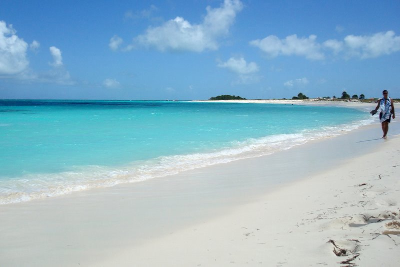

Los Roques National Park
The Los Roques Archipelago is a federal dependency of Venezuela consisting of approximately 350 islands, cays, and islets in a total area of 40.61 square kilometers. The archipelago is located 128 kilometers (80 mi) directly north of the port of La Guaira, in the Caribbean Sea. The islands' pristine coral reef attracts many wealthy visitors, especially from Europe, some of whom come in their own yachts and anchor in the inner, protected shallow waters. Development and tourism are controlled.
Los Roques National Park